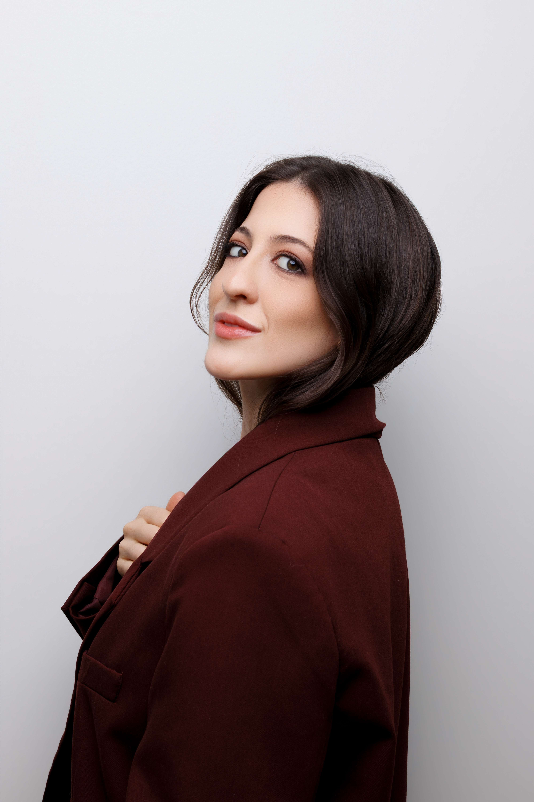
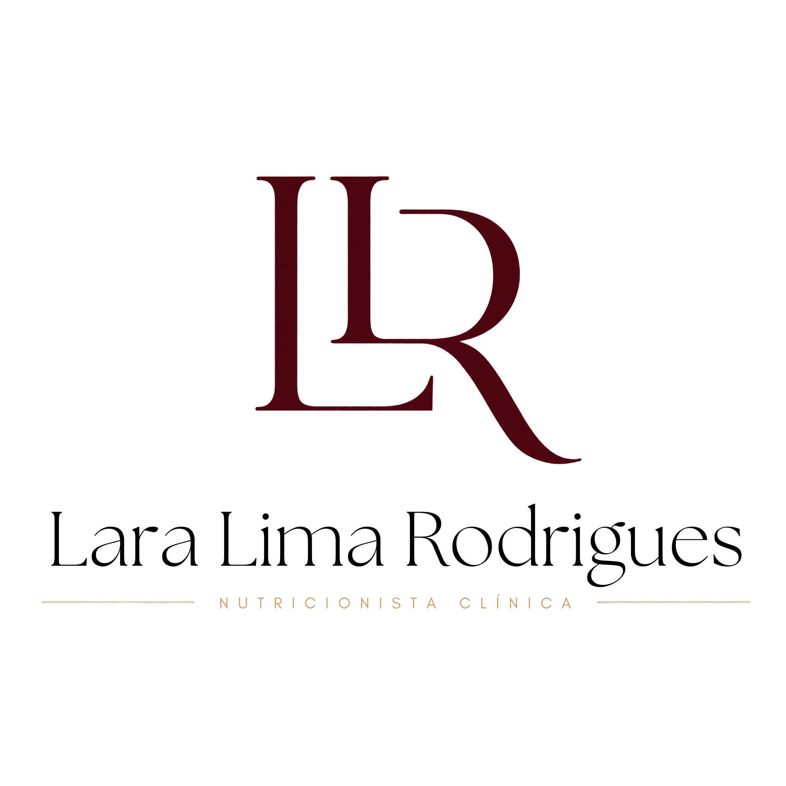
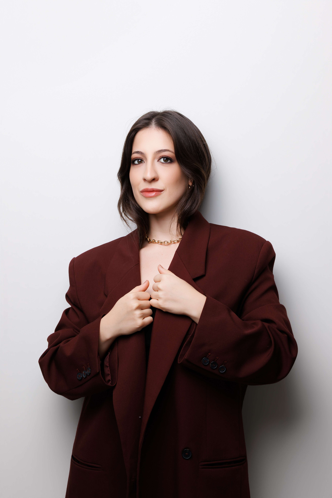

Sua saúde merece
ciência e cuidado.
Estratégias nutricionais individualizadas para saúde da mulher, equilíbrio metabólico e bem-estar que se integra à sua vida real.

Ciência profunda, escuta atenta e respeito à sua individualidade.
Construímos estratégias nutricionais que funcionam porque partem da sua biologia, da sua rotina e dos seus objetivos reais — sem fórmulas genéricas, sem restrições desnecessárias.
Individualidade
Cada organismo é único. Seu plano nutricional reflete sua bioquímica, genética e momento de vida.
Ciência Aplicada
Condutas baseadas em evidências científicas atuais, atualizadas constantemente.
Acolhimento
Espaço seguro, sem julgamentos. A mudança começa com escuta e compreensão.
Sustentabilidade
Resultados que se mantêm porque são construídos com leveza e integrados à sua rotina.
Como posso cuidar de você
Saúde da Mulher
Suporte nutricional para ciclos menstruais, fertilidade, gestação, pós-parto e modulação hormonal em todas as fases da vida feminina.
Saúde Intestinal
Equilíbrio da microbiota para otimizar imunidade, digestão, absorção de nutrientes e bem-estar do eixo intestino-cérebro.
Metabolismo
Estratégias clínicas para regulação metabólica, composição corporal, energia e vitalidade de forma saudável e duradoura.
Um método construído com escuta e precisão clínica.
Acolhimento
Compreensão sensível da sua história, rotina, queixas e expectativas em uma consulta sem pressa.
Análise Clínica
Avaliação detalhada de exames laboratoriais, composição corporal e sinais clínicos relevantes.
Plano Personalizado
Construção de uma estratégia nutricional que respeita suas preferências e se integra à sua vida.
Acompanhamento
Retornos periódicos com ajustes finos baseados na sua evolução e novos objetivos.
Cuidado que transforma, ciência que liberta.
Nutricionista clínica com formação sólida e atualização constante, meu compromisso é oferecer um atendimento onde o conhecimento técnico mais avançado encontra a sensibilidade necessária para tratar cada pessoa como única.
Acredito que o verdadeiro autocuidado não mora em restrições severas, mas na inteligência de nutrir o corpo respeitando suas necessidades individuais e celebrando o prazer de comer bem.


O que você precisa saber
Se você tem mais alguma dúvida que não foi respondida aqui, sinta-se à vontade para entrar em contato através do WhatsApp.
A primeira consulta dura aproximadamente 1 hora e é um momento de escuta, acolhimento e avaliação completa. Analisamos juntos seus exames, hábitos alimentares, rotina e objetivos para construir um plano que faça sentido para você.
Acredito que resultados sustentáveis vêm do equilíbrio, não da punição. O plano alimentar é estruturado com inteligência clínica para garantir resultados mantendo a leveza das suas preferências e vida social.
Sim. O atendimento online mantém a mesma qualidade, atenção e profundidade do presencial. Todo o material é enviado digitalmente e o acompanhamento acontece com a mesma frequência e cuidado.
Geralmente recomendamos retornos a cada 30 a 45 dias, dependendo do caso clínico. Nos retornos, avaliamos sua evolução e fazemos ajustes finos para otimizar os resultados.
Pronta para cuidar de você?
Dê o primeiro passo para uma nutrição que respeita seu corpo, sua rotina e seus objetivos. Agende sua consulta.
Agendar minha consulta